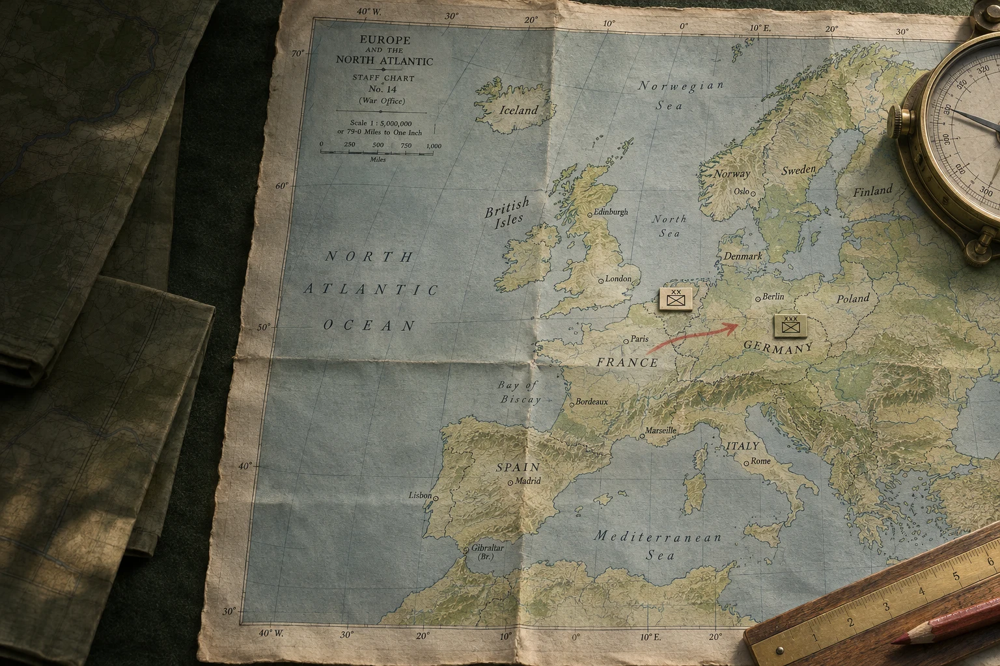

↑ NGermany France

An unofficial, fan-made strategy game inspired by Axis & Allies Global 1940, Second Edition.
Local game · Nine powers
Planned for a future release. Host a match, invite friends, and take turns on your own devices.
Player profiles for online matches are planned. For now, local games save on this device.
Choose a front to practice land combat.